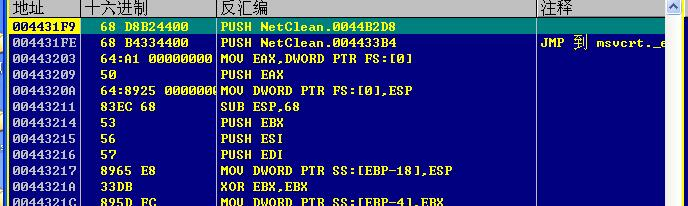

丢失的程序头部
有的程序加壳之后将原本OEP的部分头部给去除掉了，放在了自身的壳里面，导致我们脱壳之后我们的程序可能入口会出错，这个时候我们就需要自己补充上去：
丢失数据的OEP
首先我们需要找到他给我们的OEP，这里ACProcet这个壳比较特殊，我们需要用插件HideOD进行隐藏，然后将我们的调试选项，取消勾选INT3的异常：

这个时候我们运行程序，使用最后一次异常，将我们的SE栈值下上硬件断点，这里为什么不下INT3断点呢，其实是这个壳有一定的保护系统，下上会出错（别人说的），然后我们的程序会进入下面这个地方：
这个时候我们看到RETN就到了我们的假的OEP，这个时候我们运行到RETN，然后对我们的code代码段进行下访问断点：

这个时候运行程序，我们的程序就会到假的OEP：

这个时候我们知道之后，其实已经错过了找我们的丢失数据的机会，我们重新来过：
在我们下断在RETN的时候我们下12ffc0这个硬件访问断点，
然后他会带我们跳到：
我们复制二进制数据，然后相同的方法到达我们刚才的OEP，把那一段给粘贴上去：
1 | 55 8B EC 6A FF |
我们找到假的OEP其实有个坑，程序代码会混淆，这个时候我们Ctrl+A分析代码就好了，然后在上面5个字节粘贴我们的二进制：
这个时候我们将我们当前的EIP进行转到我们的补充好的数据上面，然后进行脱壳：
这个时候我们打开LoadPE，修改我们的镜像，然后拖出来，之后的操作和我们之前的都是一样的（import REC需要修复数据），然后生成我们的脱壳程序。
但是我们发现我们的程序还是没办法运行起来。这里别人说应该是保护的一个机制：
我们去到我们没有脱壳前程序的OEP，然后将我们的一些丢失数据放回去这个样子他就检测不出来了。
入口的OEP是AC000，我们跳过去，把我们的二进制数据粘贴上去，然后用jmp跳转跳转到我们的真正的OEP：
修改完毕之后我们保存（OD自带的保存修改），但是这个时候还是不行，因为我们现在PE头部的OEP还是我们真正的OEP，我们用LoadPE指过去：
我们点击保存，确定就好了，但是我们发现我们PEid还是找不到壳子，这个就是后话了。